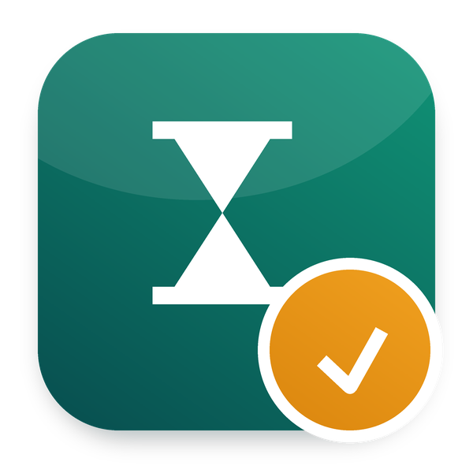

Overtime Pre-Approval
Authorise overtime in advance; beyond it, the manager accepts or rejects
Requests in advanceApproval flowAccept or reject
Part of Odoo Mates HR · Odoo 20 Community and Enterprise
Asked in advance
Employees or their managers ask for overtime hours, approved along a flow
Authorised up to the hours
The overtime of the day is validated up to the hours approved
Beyond, the manager decides
Attendances > Management > Overtime to Review: accept or reject
FeaturesWhat it does
- ✓ Overtime requests: an employee, their manager or an attendance officer asks for overtime hours on a day, with a reason. The request goes along the approval flow *Overtime Requests* (the manager by default). Employees follow theirs in My HR > My Overtime Requests; the attendance officers in Attendances > Management > Overtime Requests.
- ✓ Pre-approval: with the setting on, the overtime the time rules of the Attendances app create is checked day by day. Up to the approved hours of the day it is *Authorised* and validated; an overtime crossing the limit is split at it; the rest is *Not Authorised* and waits.
- ✓ Review (Attendances > Management > Overtime to Review): the attendance officers managing all attendances, or an attendance officer who is the attendance manager or the manager of the employee, accept the overtime not authorised, which validates it, or reject it, which refuses it. The decision is kept when the overtime of the day is checked again.
- ✓ Approved later, or withdrawn by an attendance officer, a request checks the overtime of its day again.
- ✓ Only validated overtime is paid with *Overtime in Payroll*.
SetupConfiguration
- ✓ Attendances > Configuration > Settings > *Overtime Needs Pre-Approval*, per company.
- ✓ Employees > Configuration > Requests > Approval Flows > *Overtime Requests*: the steps approving the requests, one Manager step by default.
- ✓ The time rules of the Attendances app that find the overtime.
UseHow it works
- 1. Before working extra hours, the employee or the manager creates an overtime request and sends it.
- 2. Once approved, the overtime of that day is authorised up to the hours asked.
- 3. The managers review the rest in Attendances > Management > Overtime to Review.
EditionsCommunity and Enterprise
Works with Odoo 20 Community and Odoo 20 Enterprise. On Enterprise, it cannot be installed together with the Enterprise Approvals app: both define the same records. Use one or the other.
InstallDependencies
om_hr_base, hr_attendance, om_hr_approval.
Odoo Mates HR
The HR suite of Odoo Mates for Odoo 20: every module installs on its own, the links between them are bridges.
Support: odoomates@gmail.com